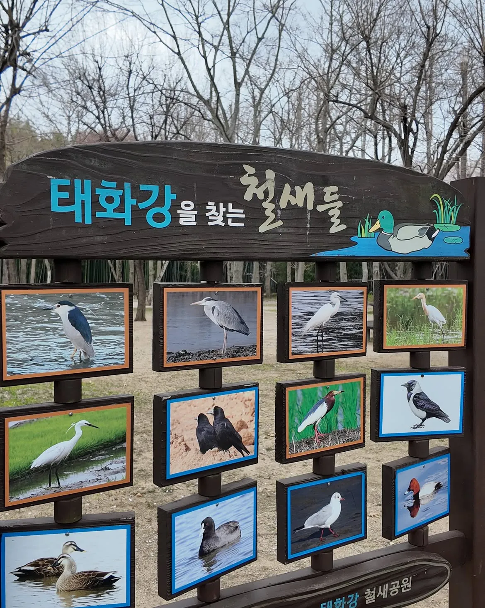
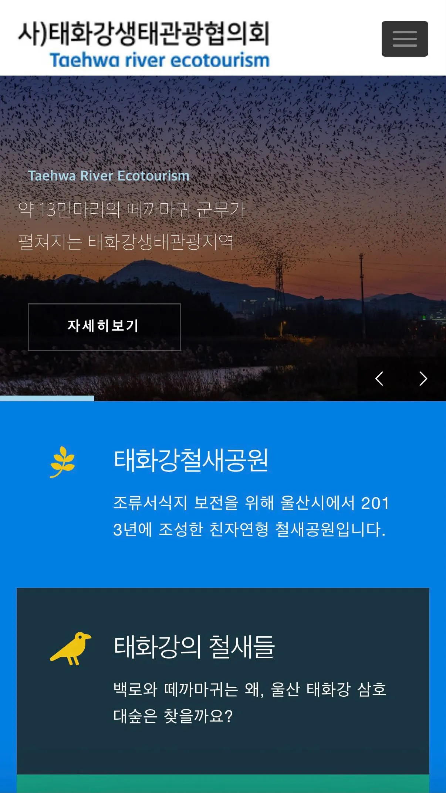
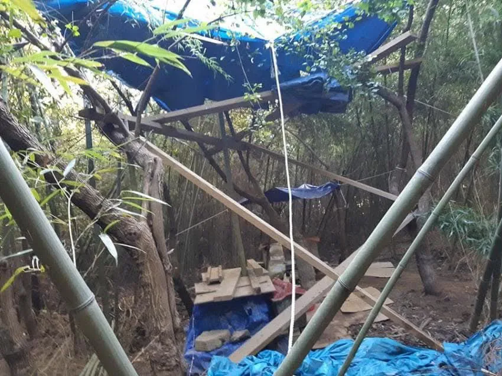
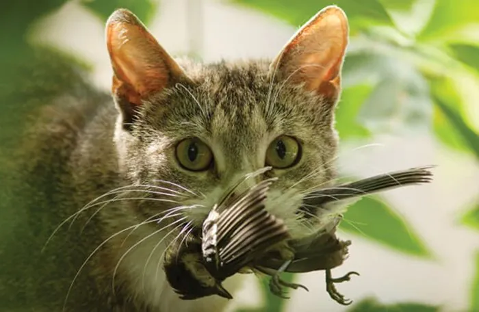

울산 태화강 철새공원
2022년 철새이동경로 네트워크 서식지
(Fly Network Site, FNS)로 등재된 공원
2019년 순천만에 이어 두번째 국가정원으로 지정되었다.
철새공원으로 지정 2013년
2028년 울산국제정원 박람회 유치 확정

해마다 수많은 철새들이 찾는
이동경로 거점이자
철새들을 관찰할 수 있는 생태공원
철새공원에 찾아온 어둠
???
태화강 철새공원에서
길고양이를 보호하라는 캣맘들
의문의 동물보호단체까지 가세
소름돋는
태화강 국가정원 연관어 키워드
태화강국가정원의 국민신문고 민원
길고양이 급식소 설치요청?!

길고양이 급식소 움막
2028년 울산국제정원 박람회에서 보게 될 예술작품이다.

아니 시발 너네가 데리고 가서 키우라고 ㅡㅡ
댓글
수집 당시 댓글 21개
밤막걸리 · 2 일 전
캣맘들 을숙도 철새도래지에도 저지랄 해놓더니 울산에서도 저러네 ㅋㅋㄱ진짜 한결같다
좋아좋아좋아요 · 2 일 전
길고양이들은 재미로 새 사냥하는 애들임
초코다이제 · 2 일 전
철새도 동물인데 빡대가리들아?
탄탄대로 · 2 일 전
수리부엉이님 매님 조롱이님 도와줘요!
천상천하일격필살포 · 2 일 전
미쳤나 진짜 항상 반대쪽인 명촌교쪽으로 운동갔는데 이제 철새공원쪽으로 운동가야겠다 저지랄하는거 보이면 개지랄하게
천상천하일격필살포 · 2 일 전
근데 움막 저거 십리대밭 안에다가 저지랄 해놓은건가? 민원 존나 넣어야겠네
네비두라 · 2 일 전
캣맘 입장에서 철새도래지는 고양이들 무한급식소로 보일듯
코노 · 2 일 전
막짤 진짜 서늘하고 살벌하게 잘 찍었다
Alchemy · 2 일 전
비비탄 존나쌔게해서 저격하고싶네
룽니 · 2 일 전
개드립에서만 쒸익쒸익 캣맘죽엉 하면 뭐하냐 민원넣어야지
침착 · 2 일 전
고양이 키우는애들중에 정신 아픈애들 진짜 많음
썬오브부농 · 2 일 전
존나 패야하는거아니냐?
기억할수록 · 2 일 전
그냥 길고양이 살처분이 맞음
항히스타민제 · 2 일 전
캣맘은 그냥 정신상태가 정상이 아니라고 보면 됨 아가리로는 생명이 소중하고 함께살고 어쩌고 하는데 본심은 고양이 말고는 개좆도 관심없고 고양이 말고 다른 야생동물이 절멸하든 말든 자기가 밥주는 고양이가 온 들과 산을 뒤덮어도 좋다고 박수칠 미친년들이라는거임 이 미친년들이랑 논리적인 대화를 하고 설득을 하려는 시도 자체가 무의미하고 나라에서 강경하게 고양이 개체수 관리를 하고 밥주는것도 엄금해야 하는데 존나 얼탱이 없게도 저 미친년들 요구를 들어주고 있다
배틀딱 · 1 일 전
"우리 길천사들 장난감이 이렇게나 많네~~~~"
월터 · 1 일 전
좆같은 민원차단이 안되니까 공무원들도 정치인들도 어쩔수가없구나.
신성 · 1 일 전
동물단체(철새는 동물 아님)
민트초코갈비찜 · 1 일 전
진짜 이해가 안되는단어가 "길고양이 급식소" 이거임 뭐든 야생동물 급식소 차리면 유해조수되겠다 왜 굳이 급식소까지 차려가면서 개체수를늘려야함?
항히스타민제 · 1 일 전
귀여우니까 그거말고는 없음
로보트 · 1 일 전
요즘 어느 주요 꽃 명소에 가도 저 지랄 해 놓더라 우산이랑 뭐 각종 폐기물로 집 만들어 놓던데 정작 길고양이는 구들장 같은 바닥 구석탱이나 숲속에 기어 들어가서 살고있고 밥만 먹으러 잠깐 옴
pangloss · 1 일 전
고양이가 문제가 아님. 고양이를 잘못된 방식으로 사랑한다고 생각하는 사람이 문제 근데 사람을 살처분 할 수는 없으니까 고양이 살처분 하자는거지